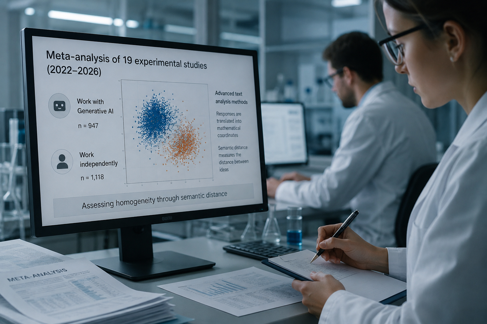

Генеративный искусственный интеллект помогает нам создавать контент, но расплачиваться за это приходится разнообразием мыслей. Ученые доказали: массовое применение ИИ-ассистентов сужает спектр концепций в коллективной работе.
Генеративный ИИ — программы, способные создавать тексты, изображения и другой контент по запросам пользователей. Большинство таких систем работает на основе больших языковых моделей, обученных на миллиардах образцов, почерпнутых из интернета. Поскольку многие пользователи взаимодействуют с похожими системами, обученными на пересекающихся данных, исследователи уже несколько лет бьют тревогу: не превращает ли это наше мышление в однородную массу?

Алвин де Рой из Университета Тилбурга и Микаэль Мозе Бискьяер из Орхусского университета решили проверить эти опасения систематически. «В научном мире растет обеспокоенность тем, что использование генеративного ИИ может подталкивать людей к похожим творческим идеям», — объясняют авторы работы. «ИИ действительно может повышать креативность на индивидуальном уровне, но эти преимущества могут иметь свою цену, снижая креативность на коллективном или даже общественном уровне».
Ученые провели мета-анализ 19 экспериментальных работ, опубликованных в 2022—2026 годах — период после появления популярных чат-ботов. Все отобранные исследования сравнивали людей, работающих с генеративным ИИ, и людей, которые работают самостоятельно. Для оценки однородности использовались продвинутые методы текстового анализа, переводящие ответы в математические координаты и позволяющие измерить семантическую дистанцию между идеями.
Анализ выявил статистически значимый эффект гомогенизации. Когда люди использовали ИИ-системы, их конечные продукты оказывались более похожими на работы других пользователей. «Мета-анализ показывает, что использование генеративного ИИ действительно может заставлять людей думать похоже», — отмечают авторы. «Это говорит о том, что ИИ может способствовать своего рода гомогенизации творческой мысли на коллективном уровне».
Эффект оказался наиболее выраженным в задачах на генерацию идей с конкретными ограничениями — например, при поиске решений для улучшения работы общественного транспорта. В более открытых задачах (скажем, придумывании необычных способов использования скрепки) гомогенизация была слабее. Важно, что однородность проявлялась не только в лабораторных условиях, но и в реальном мире — при анализе опубликованных текстов и визуальных работ.
Сильнее всего специалистов встревожило то, что эффект может сохраняться после прекращения использования ИИ. Другими словами, взаимодействие с системами способно формировать мышление даже после окончания работы с ними.
Причина явления проста: крупные компании обучают модели на массивах пересекающихся данных из интернета. Программы тяготеют к статистически наиболее распространенным словесным ассоциациям, действуя как «семантический якорь» и притягивая пользователей к общему набору типичных концепций.